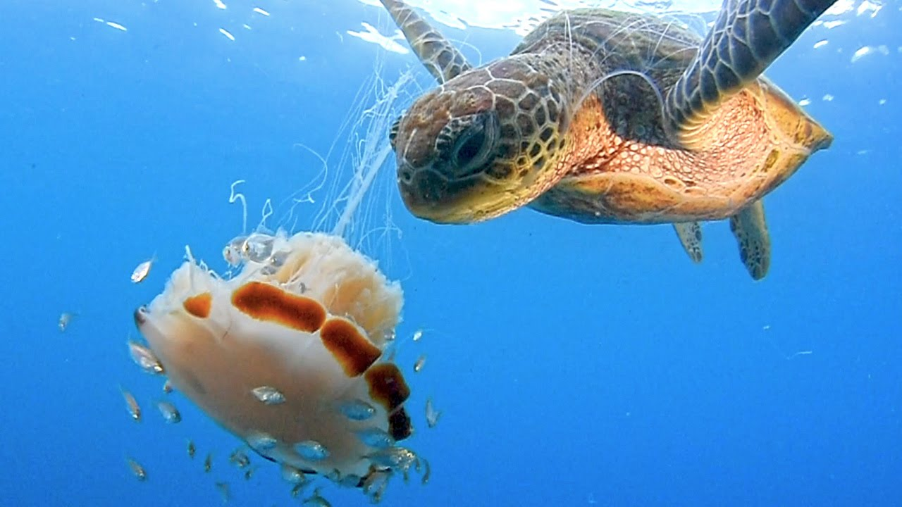
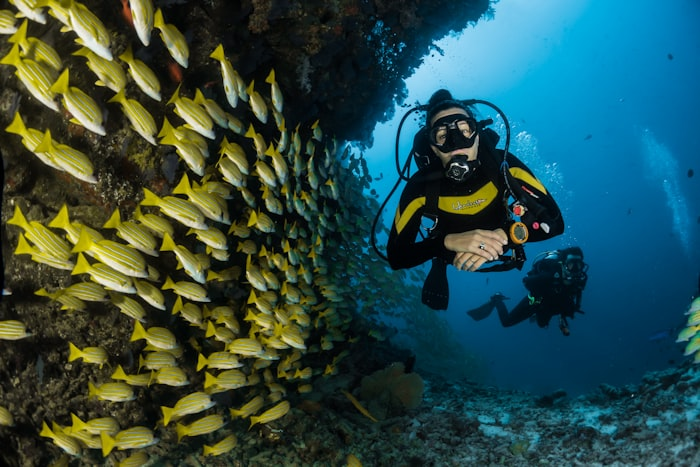
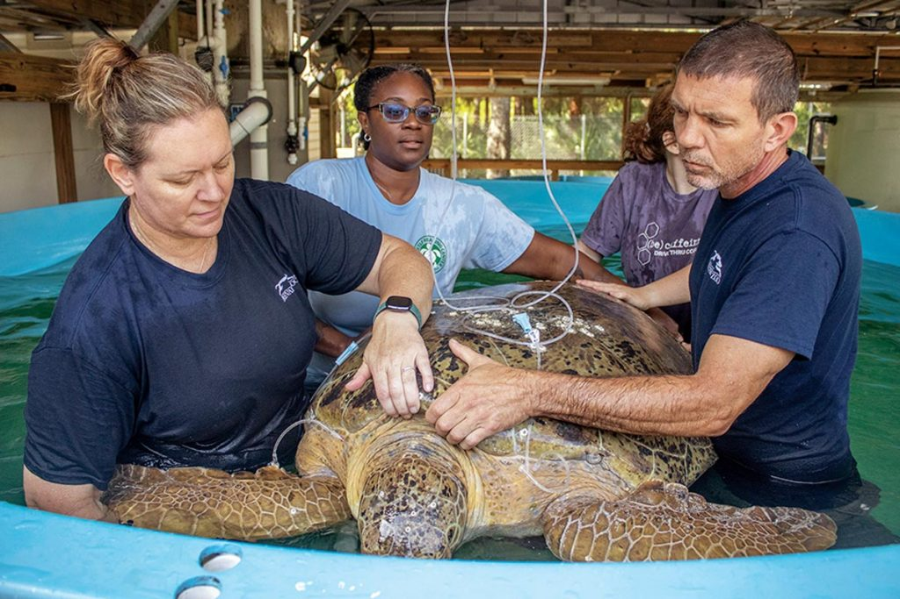

Protecting the Hidden Gems of South Florida
Coral Coast Turtle Rescue is dedicated to the rehabilitation and protection of the sea turtle—the resilient "Diamondback Terrapin" of our coastal mangroves.
Help Us Save Them

Facing the Modern Crisis
In the shimmering waters of South Florida, sea turtles—those ancient mariners of the sea—embody a quiet strength, enduring for millions of years against nature's trials. Yet, today, they whisper a heartbreaking plea amid our bustling world. Imagine a mother sea turtle, heavy with eggs, hauling herself onto a once-pristine beach, only to confront unyielding concrete walls and roaring roads. Our "Concrete Jungle" has devoured their sacred nesting grounds, fragmenting habitats and severing generations in a single blocked path. It's a silent tragedy: lineages lost before they begin.
Compounding this sorrow are the unseen perils below the waves. Drawn by tempting bait, sea turtles venture into commercial crab pots—those "ghost traps"—where escape means drowning, their lungs aching for air they can't reach. And in the crowded channels, boat propellers slice through their peaceful journeys, leaving scars that echo our hurried lives. These resilient beings, who navigate vast oceans by starlight, now battle human expansion that knows no pause.
At Coral Coast Turtle Rescue, we feel their struggle deeply. We're committed to mending these wounds through rehabilitation, advocacy, and community action. Join us in turning empathy into change—because every sea turtle saved is a victory for the sea's enduring spirit. Together, we can restore the balance they've lost.
All About Us
Our Beginning
Coral Coast Turtle Rescue was founded by a small group of marine biologists and coastal volunteers who refused to watch South Florida's sea turtle populations silently disappear.
Reason for helping
Sea turtles have navigated our oceans for more than 100 million years. Today, every species is classified as threatened or endangered not because nature failed them, but because humanity did.
Our action
Our facility provides emergency medical care, long term rehabilitation, and safe release programs for injured and ill sea turtles.We also run community education programs, nesting beach monitoring, and coastal cleanup events because saving sea turtles means saving the ocean they call home

Our Recent Victories
Barnaby's Great Escape
Barnaby, a senior sea turtle with a stunning concentric shell, was found by local kayaker Elena tangled in a discarded "ghost" crab trap. Exhausted and dehydrated, Barnaby was rushed to our clinic. Elena assisted as we carefully cut away the nylon mesh. After three weeks of specialized rehydration therapy and a diet of nutrient-rich blue crabs, Barnaby regained his strength. With a spirited splash, he was released by Elena back into the emerald mangroves of Key Largo.

Puddles and the Propeller
Officer Miller spotted Puddles floating listlessly near a busy marina, suffering from a deep propeller gash across his carapace. We used medical-grade resin and stainless steel bridges to stabilize Puddles' shell while he recovered in our quiet salt-bath tanks. Over two months, the wound calcified perfectly. Officer Miller returned for the big day, watching proudly as Puddles paddled vigorously away from the shoreline, heading home to the quiet tidal creeks he loves.


Clementine's Clean Slate
Found by Sarah during a beach cleanup, Clementine was struggling after ingesting several pieces of microplastic that mimic her favorite jellyfish snacks. Sarah stayed calm while our team administered a gentle detox protocol to clear Clementine's digestive tract. Once she was eating heartily again, her energy levels soared. Sarah carried her to the water's edge at sunset, where Clementine caught the incoming tide and disappeared into the surf with a lucky flick of her flippers.
Pip's Brave Journey
Pip was a tiny hatchling found by Marcus after he took a wrong turn toward a parking lot light instead of the moonlit ocean. Marcus protected the palm-sized turtle from prowling crows and brought him to us for a health check. After a few days of rest and a "booster" meal, Pip was deemed fit for the wild. Marcus released him on a dark, quiet stretch of sand, cheering as Pip's tiny tracks led him successfully into the Atlantic.

Marigold's Recovery
Marigold was rescued by Captain Jack after he spotted her struggling to stay afloat, weighed down by a massive colony of aggressive barnacles. The hitchhikers had completely encrusted her shell and limbs, making it impossible for her to swim or dive for food. Captain Jack carefully brought the exhausted turtle to our center. Our specialists spent hours gently removing the barnacles one by one. Once her shell was smooth and her mobility returned, Marigold's fierce spirit resurfaced.

The Ocean Needs YOU - Right Now
Sea turtles cannot call their senators. They cannot organize beach cleanups. They cannot donate to their own rescue. But you can — and what you do today directly determines whether future generations will ever see a sea turtle glide through Florida's waters. The stakes are real. The need is urgent. And every single contribution matters.
Whether you have an hour, a dollar, or a voice — there is a place for you at Coral Coast Turtle Rescue. Join thousands of South Floridians who have decided that these ancient animals are worth fighting for.

Report a Turtle in Distress
See an injured or stranded sea turtle? Every second counts. Call our 24/7 rescue hotline at 888-111-1234 or use our contact form below. Do not try to move the turtle yourself — let our trained team take it from there.

Volunteer With Our Team
Join our beach patrol teams, help monitor nesting sites, assist with weekend coastal cleanups, or support daily care at our rehabilitation facility. No experience necessary — just heart. We train everyone who shows up ready to help.

Donate to the Mission
Your donation funds the medical resins that repair shattered shells, the specialized diets that bring weakened turtles back to health, and the Bycatch Reduction Devices (BRDs) we provide free of charge to local fishermen. Every dollar goes directly to the turtles.
Ready to Make a Difference?
Hundreds of volunteers have already joined Coral Coast Turtle Rescue. They are teachers, retirees, college students, fishermen, and families. They are united by one belief: these turtles deserve a future.
Contact Us at 888-111-1234 to Get StartedSpotted an Injured Turtle?
Contact our 24/7 rescue hotline immediately at 888-111-1234.